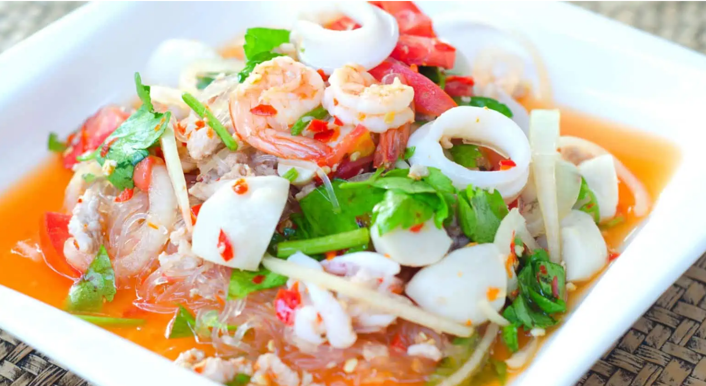

เเบบฝึกหัดที่2: เมนูอาหาร
รหัสนักศึกษา 6440011039 อธิชา เกตุแก้ว
สูตรน้ำยำ กระเทียมดอง

น้ำยำ
ชนิดนี้ สามารถนำไปประยุกต์กับเมนูยำได้อย่างหลากหลาย ส่วนใหญ่แล้วจะใช้ทำเมนูยำหลัก ๆ เช่น
ยำวุ้นเส้น ยำมาม่า แล้วก็ยังทำ ยำคะน้ากุ้งสด ยำปลาหมึก ยำเห็ดนางฟ้า ได้อีกด้วย
โดยรสชาติของน้ำยำ
จะมีรสเปรี้ยว เค็ม หวาน กำลังดี ทำให้ถือเป็นน้ำยำที่พ่อครัวแม่ครัว ควรรู้
ส่วนผสม
- พริกขี้หนูสดเเดง
- กระเทียมจีนกลีบใหญ่
- กระเทียมดอง(ปอกเปลือก)
- น้ำกระเทียมดอง
- น้ำมะนาว
- น้ำปลา
- น้ำตาลปี๊บ
วิธีการทำ
- นำพริกขี้หนู กระเทียมสด รากผักชี เเละกระเทียมดอง มาโขลกละเอียดตามชอบ
- จากนั้น ใส่น้ำปลา น้ำตาลปี๊บ น้ำกระเทียมดอง คนให้เข้ากัน เเล้วบีบมะนาว ปิดท้าย
| ส่วนผสม |
ปริมาณ |
| พริกขี้หนูสดเเดง |
1/4ถ้วยตวง |
| กระเทียมจีนกลีบใหญ่ |
1/4ถ้วยตวง |
| กระเทียมดอง(ปอกเปลือก) |
2ช้อนโต๊ะ |
| น้ำกระเทียมดอง |
2ข้อนโต๊ะ |
| น้ำมะนาว |
5ช้อนโต๊ะ |
| น้ำปลา |
3ช้อนโต๊ะ |
| น้ำตาลปี๊บ |
2ช้อนโต๊ะ |
อ้างอิงสูตร
Home